السلسلة 100
السيارة (صنف B) · 25 سؤال بالصوت. حاول تجاوب بوحدك، من بعد شوف الجواب.
السؤال 1
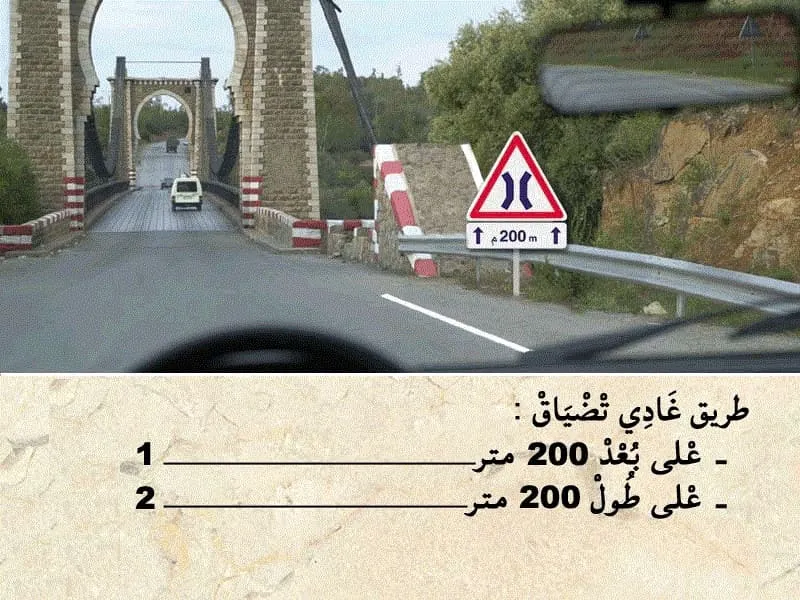
بيّن الجواب
الجواب الصحيح: 2
هذا العلامة ديال الخطر .
كتعلم بلي غادي نلقى طريق ديقة في نقطة معينة .
- الاسهم اسفل العلامة كتعلم على الامتداد على طول 200 متر .
السؤال 2

بيّن الجواب
الجواب الصحيح: 2
هذا العلامة ديال المنع. "تحديد السرعة"
كتعلم على انه ممنوع السير بأكثر من 60 كلم في الساعة.
✅ العلامة التكميلية كتعلم بلي المنع كيخص الشاحنات. و بالتالي ما كتعنينيش في.
السؤال 3
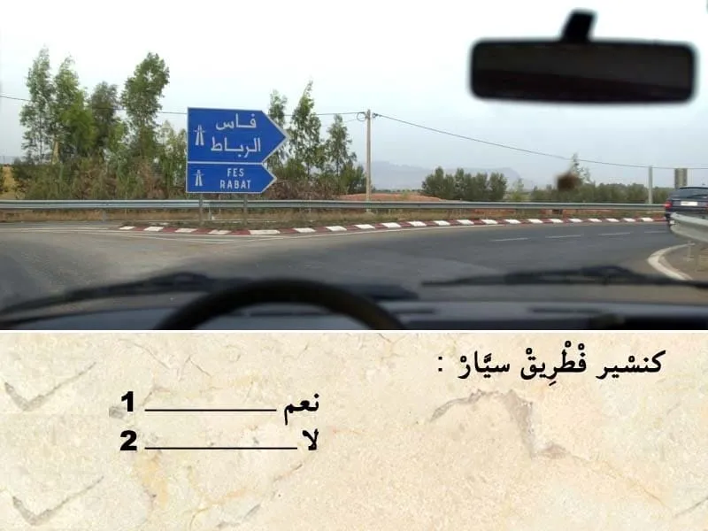
بيّن الجواب
الجواب الصحيح: 2
التشوير الطرقي كيضم علامة ديال الإرشاد على شكل سهم الى اليمين.
- الا تبعت السهم الى اليمين غادي ندخل لطريق سيار.
- اما الا تبعت الطريق الى اليسار غادي نكمل في طريق عادية .
السؤال 4
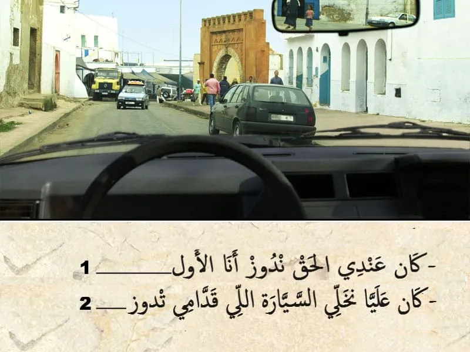
بيّن الجواب
الجواب الصحيح: 2
الطريق فيها في الإتجاهين .
و الجهة ديالي عامرة فيها سيارة واقفة و بالتالي كان واجب عليا نسمح بالمرور للعربة لي جاية قبالتي .
السؤال 5

بيّن الجواب
الجواب الصحيح: 2
هذا الشاحنة جزء منها داخل مسلك السير. و بالتالي التوقف بشكل غير صحيح.
السؤال 6

بيّن الجواب
الجواب الصحيح: 1
هذا السيارة في الطريق الرئسية و انا خارج من الطريق ثانوية .
و بالتالي انا لي واجب عليا نعطي حق الأسبقية.
السؤال 7
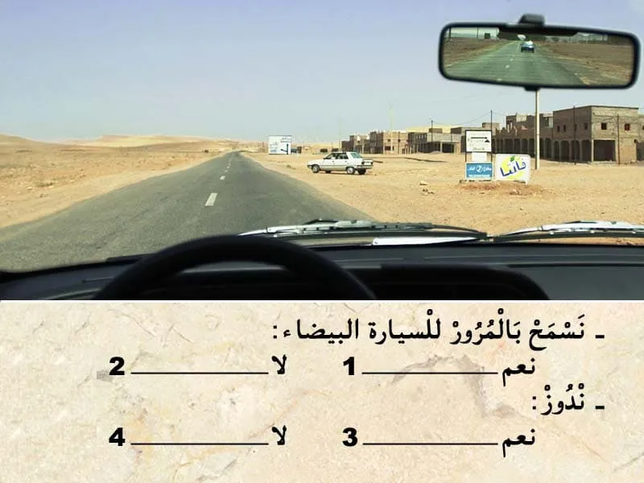
بيّن الجواب
الجواب الصحيح: 2 و 3
هذا السيارة خارجة من تجمع سكني و انا كنسير في الطريق الرئيسية.
و بالتالي واجب عليها تعطيني حق الأسبقية.
السؤال 8

بيّن الجواب
الجواب الصحيح: 1 و 3
من الواجب مراقبة أضواء السيارة. و نضافتها.
و من الواجب تكون معيا مصابيح إحتياطية.
السؤال 9
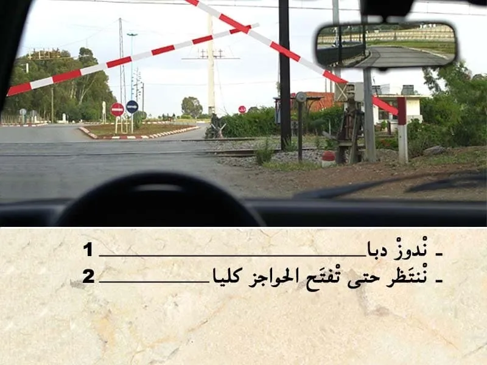
بيّن الجواب
الجواب الصحيح: 2
في هذا الحالة. الحواجز مزال ما تفاحات كليا و بالتالي واجب عليا ننتظر حتى تفتح كليا .
السؤال 10
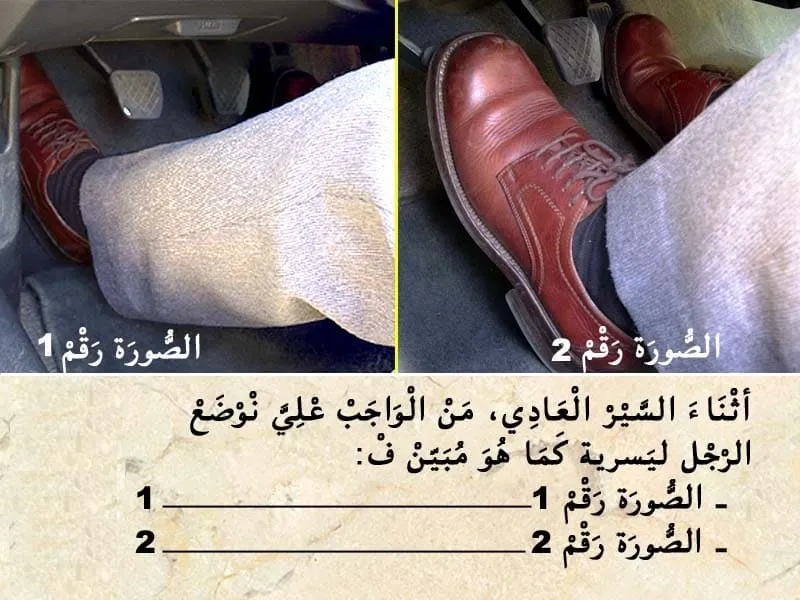
بيّن الجواب
الجواب الصحيح: 1
اثناء السير العادي . من الواجب علي نوضع الرجل ليسرية كما هو مبين في الصورة رقم في الصورة رقم 1.
السؤال 11

بيّن الجواب
الجواب الصحيح: 1
فهذا الحالة كاين هذا الراجلين فجنب الطريق و بالتالي كاين خطر .
و بالتالي واحب عليا نستعد الحصر .
السؤال 12
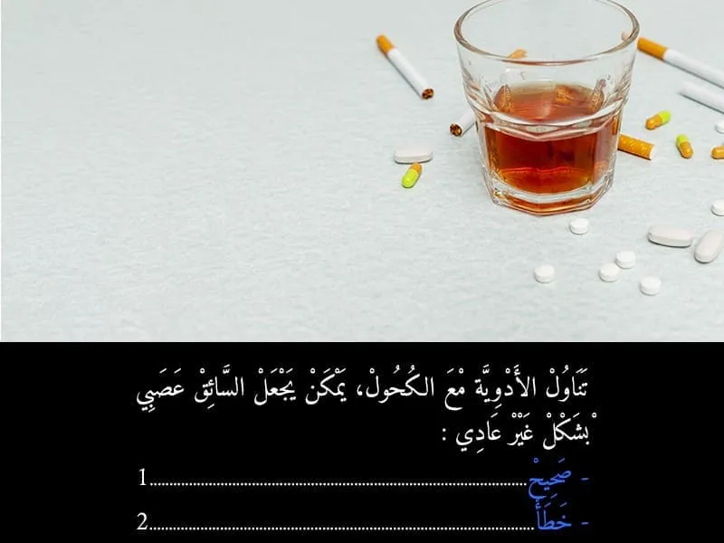
بيّن الجواب
الجواب الصحيح: 1
في حالة تناول الادوية مع الكحول يمكن يضاعف نسبة الكحول في الدم ديال السائق و بالتالي يصبح عصبي بشكل غير عادي.
السؤال 13
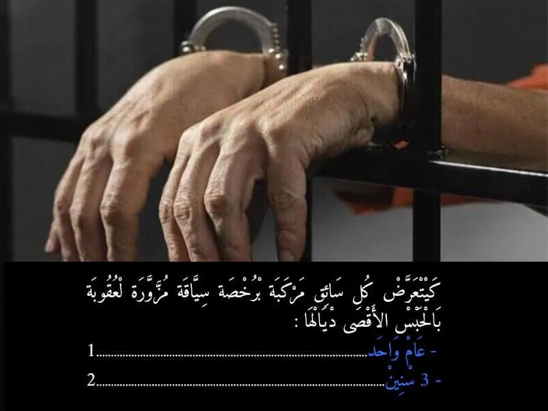
بيّن الجواب
الجواب الصحيح: 2
عقوبة حبسية تتراوح ما بين ستة (6) أشهر إلى ثلاث (3) سنوات غرامة مالية ما بين الفين (1200) وخمسة آلاف (5000) درهم,
- تلغى اختبارات امتحان الحصول على رخصة السياقة
- لا يجوز للمخالف التقدم للامتحان من اجل الحصول على رخصة سياقة جديدة إلا بعد انصرام أجل يتراوح بين سنة واحدة وثلاث سنوات ابتداء من تاريخ صدور مقرر حائز لقوة الشيء المقضي به
السؤال 14
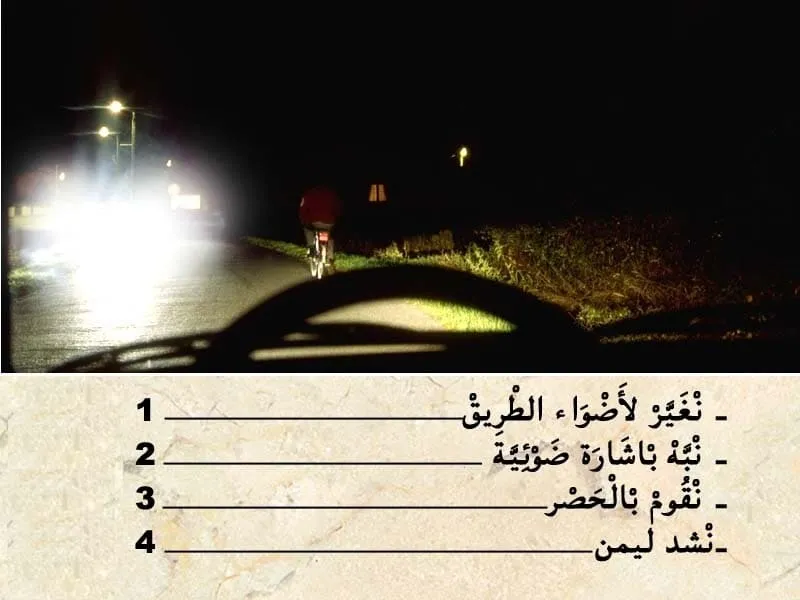
بيّن الجواب
الجواب الصحيح: 2 و 3 و 4
في هذا الحالة. مستعمل طريق لي قبالتي ضايقني باضواء الطريق.
- و بالتالي واجب عليا ننقص من السرعة.
- يمكن لي نبه بإشارة ضوئية.
- و نشد ليمن ديالي.
- و نقوم بالحصر .باش ننقص من السرعة .
⛔ ما غاديش نقوم بالحصر بقوة .
السؤال 15

بيّن الجواب
الجواب الصحيح: 1 و 2
هذا العلامة ديال المنع.
💥 كتعلم بلي ابتداء من العلامة التجاوز غادي يصبح ممنوع على جميع انواع العربات.
يعني ممنوع عليا نتجاوز اي عربة .
✅ يمكن لي نتجاوز دراجة .
السؤال 16

بيّن الجواب
الجواب الصحيح: 2 و 3
في حالة وقوع عطب مفاجئ في الحصار الرئيسي.
الطريق الصحيحة هي :
✅ ننقص من السرعة. يعني نرفع الرجل ديالي على دواسة السرعة.
✅ نشغل اضواء النجدة.
✅ ننقص من درجة السرعة تدريجيا.
✅ نستعمل الحصار ديال اليد .
السؤال 17
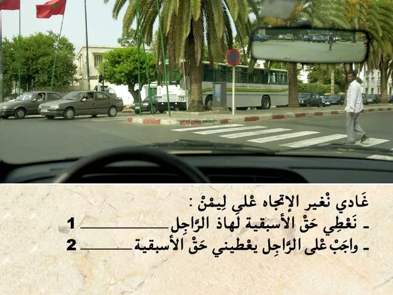
بيّن الجواب
الجواب الصحيح: 1
في هذا الحالة كاين هذا الراجل في ممر ديال الراجلين. و بالتالي واجب عليا نوقف و نعطي حق الأسبقية.
السؤال 18

بيّن الجواب
الجواب الصحيح: 1
هذا العلامة ديال المنع. "تحديد السرعة"
كتعلم على انه ممنوع السير بأكثر من 60 كلم في الساعة.
✅ و بالتالي يمكن يمكن لي نزيد في السرعة الا كنت كنسير ب 40 كلم في الساعة. بشرط ما تفوتش 60 كلم في الساعة.
السؤال 19

بيّن الجواب
الجواب الصحيح: 2 و 3
هذا العلامة ديال الخطر.
-كتعلم على منعرج خطير على ليمن .
- الخطر خارج التجمع السكني كيكون على بعد 150 متر .ولكن تحت العلامة كاين علامة تكميلية فيها 500 متر .و بالتالي الخطر اصبح على 500 متر .
يعني الجواب الصحيح هو 23.
السؤال 20

بيّن الجواب
الجواب الصحيح: 2 و 3
في هذا الحالة انا في مكان كيتواجدوا فيه الاطفال و بالتالي من الواجب عليا ننقص من السرعة و نستعد باش نقوم بالحصر.
حيت السلوك ديال الاطفال كيكون غير متوقع.
الكرة الموجودة فوسط الطريق كتدل على وجوذ أطفال.
السؤال 21

بيّن الجواب
الجواب الصحيح: 2 و 3
في هذا الحالة كاين الضبابة و التالي من الواجب عليا نشغل الاضواء باش نكون واضح للأخرين .
في حالة الضبابة يمكن ليا نمشي :
-- بأضواء الوضع.
-- أضواء التقابل .
-- أضواء الضبابة ديال القدام .
السؤال 22
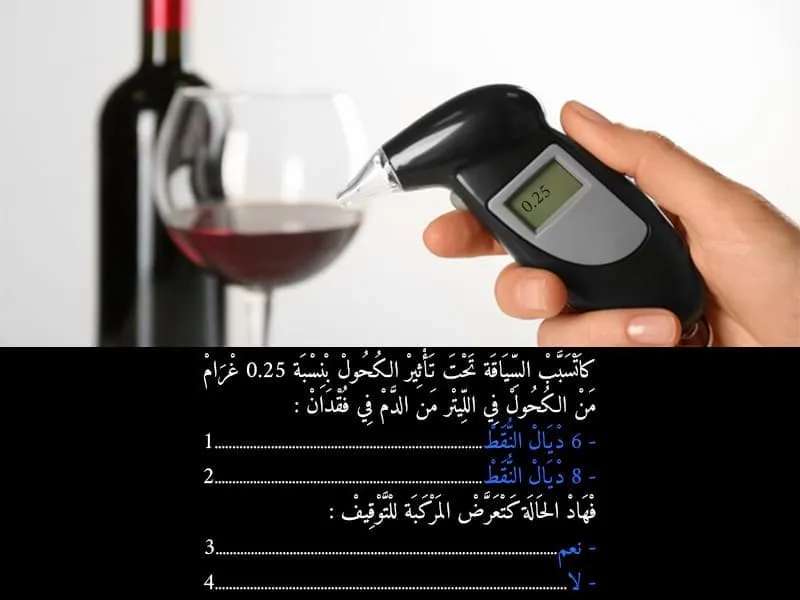
بيّن الجواب
الجواب الصحيح: 1 و 3
السياقة تحت تأثير الكحول كتعتبر جنحة الا تجاوز نسبة الكحول في الهواء لي خارج من الفم 0.10 غ في الليتر.و كيتم خصم 6 نقاط . و يتم إقاف المركبة.
السؤال 23

بيّن الجواب
الجواب الصحيح: 2 و 3
السياقة تحت تأثير الكحول كتعتبر جنحة الا تجاوز نسبة الكحول في الهواء لي خارج من الفم 0.10 غ في الليتر.
🪫و كيتم خصم 6 نقاط .
🚫و يتم إقاف المركبة.
السؤال 24
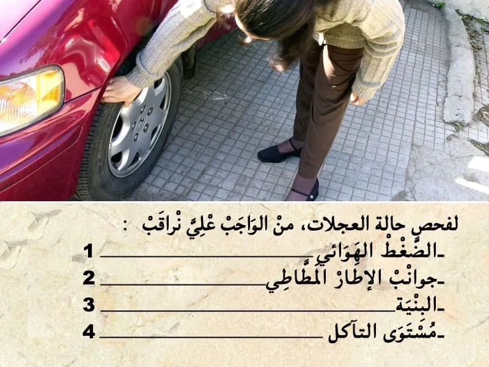
بيّن الجواب
الجواب الصحيح: 1 و 2 و 4
لفحص حالة العجالات من الواجب نراقب الضغط الهوائي و جوانب الإطار المطاطي و مستوى التأكل.
السؤال 25

بيّن الجواب
الجواب الصحيح: 1
باش نتجاوز هذا سائق الدراجة. يجب عليا تنبهه.
في هذا الحالة سائق الدراجة ما كيتوفرش على مرأة عاكسة . يا شنبه بإشارة ضوئية.
- خارج التجمع السكني يمكن لي نبه بالمنبه الصوتي.